Les 24 h du cerf-volant à Brie

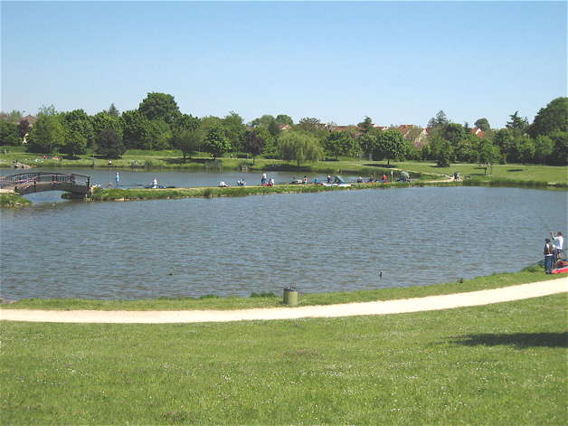
Brie-Comte-Robert, cadre d'un célèbre feuilleton, au sud-ouest de Paris... Un grand parc doté d'un lac au bord duquel les pêcheurs de carpe ont passé la nuit dans leurs tentes vertes (camouflage anti-poisson ?)...

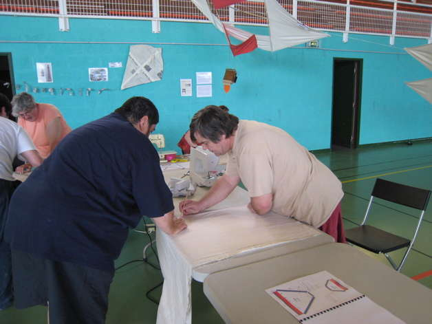
Dès le vendredi, BambouCoton a monté un atelier de fabrication de cerfs-volants du même tabac, pas encore beaucoup de mordus, mais apparemment, ça se développe doucement...

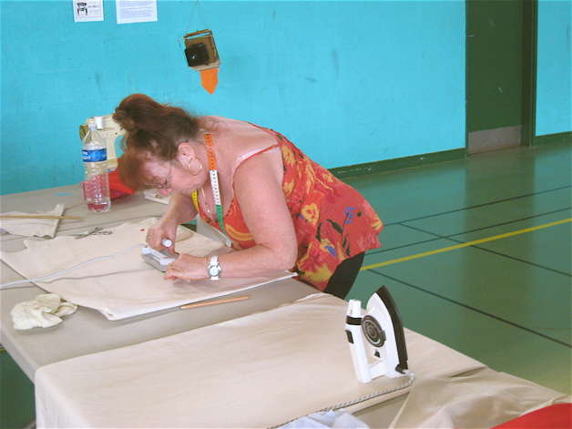
On a même amené les fers à repasser, pour la couture des ourlets obligatoirement retournés et pas trop larges dans cette taille de cerf-volant...

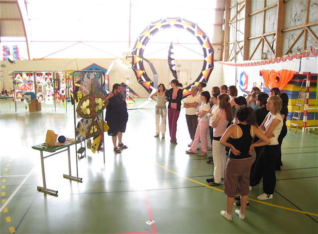
BambouCoton a aussi monté une expo de toute sa collection de cerfs-volants plus d'autres, ceux de Claude Bova, ou ma Demoiselle, par exemple...

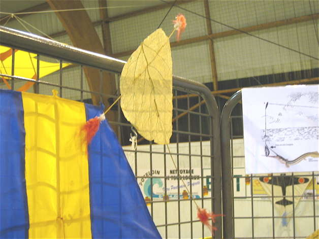
Dans l'expo, beaucoup de CVs asiatiques, comme ce cerf-volant, non pas en feuilles, mais en UNE feuille !

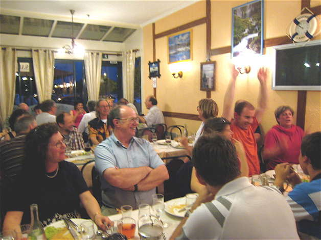
Les cervolistes sont arrivés progressivement et le soir, on dîne ensemble au restaurant en ville... Xavier et Hugo ont une belle collection de chansons à leur répertoire, les étrangers ne comprennent pas tout...

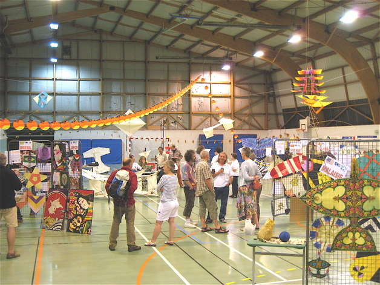
Ensuite, on retourne au gymnase pour une petite bière et discutage de coup jusqu'à une heure pas raisonnable...

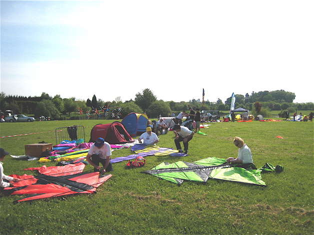
Le lendemain matin, ça n'empêche pas les équipes d'être tôt sur le terrain et de commencer le montage des cerfs-volants de la bande !

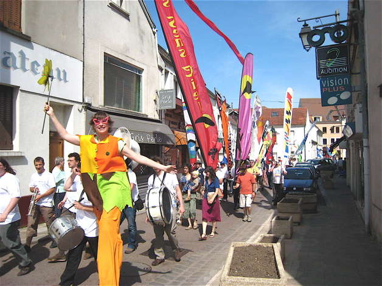
Mais il ne faut pas oublier le défilé sacro-saint à travers la ville ! Cette année, on part à pied du Parc, c'est un peu loin, mais ça évite les complications et les lenteurs du parking...

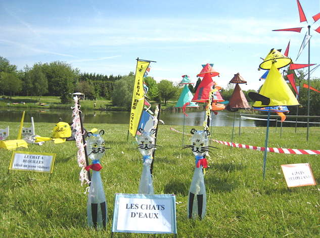
Emmanuel a agrémenté son jeu de chats de ces chats d'eau !

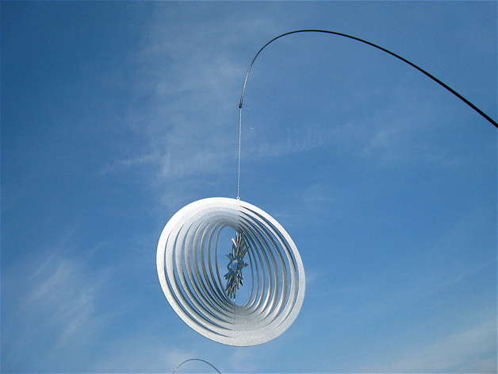
JdVs immortels : ceux-là sont travaillés dans des plaques d'inox découpées au laser et déformées en 3D ! Simple, mais il faut avoir le don des formes... et aussi l'outillage !

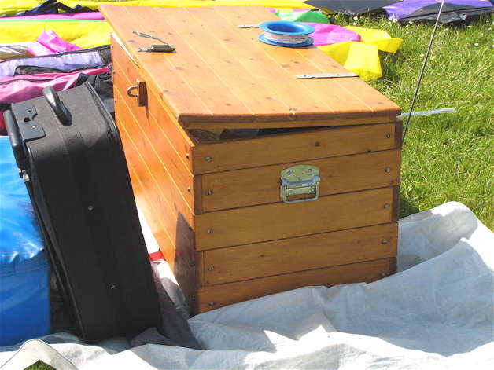
On voit arriver des caisses pleines de matériel. Là, au cri de : -Pas de pétrole-, c'est vraiment de l'authentique bois d'arbre...

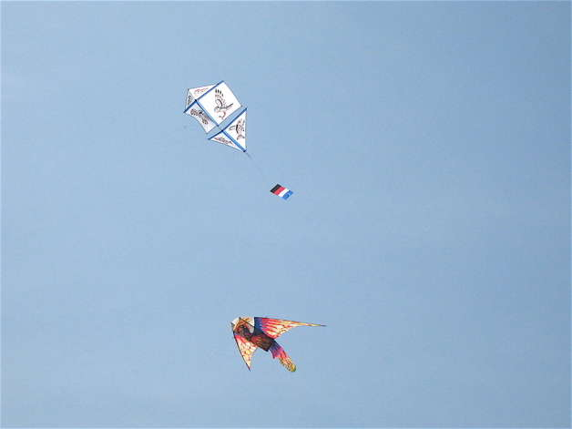
Après le défilé, il reste un peu de temps pour voler vite fait... Un joli Roller décoré d'animaux, et un delta très amélioré...

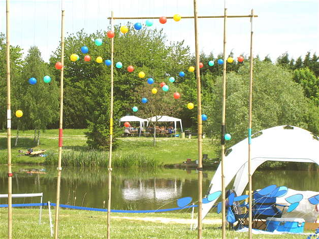
Les pêcheurs compensent leur dure nuit par leur banquet à eux, sous leur barnum à eux, en face des jardins de Patrick et Annick...

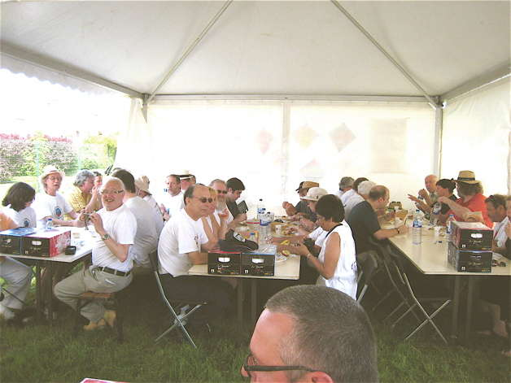
Temps pour nous de rejoindre notre barnum à nous pour un déjeuner apprécié...

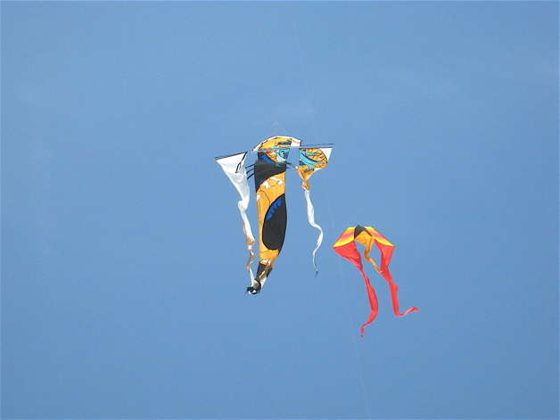
Sylvie Perry a sorti son beau cerf-volant composé !

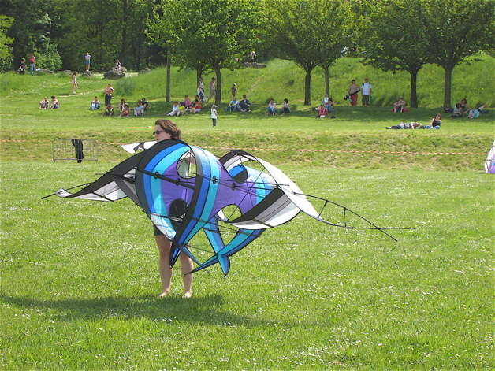
Voilà un cerf-volant comme vous n'en verrez pas tous les jours, il faut vraiment un illuminé qui recherche la difficulté pour créer ça...

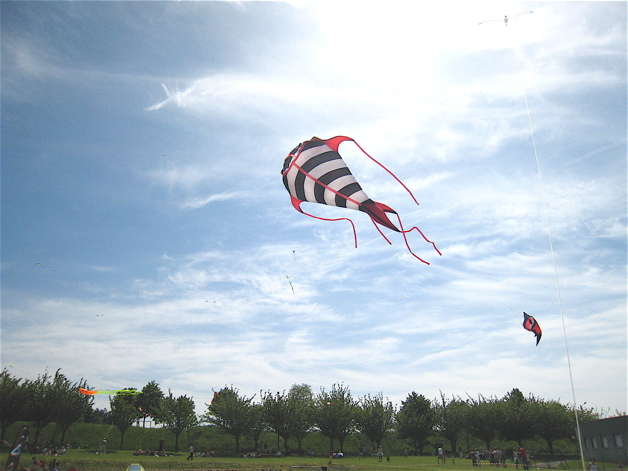
Un grand poisson Peter Lynn, mais concocté par un amateur au prix d'innombrables heures de couture !

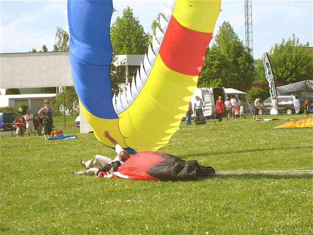
Malgré le vent irrégulier (c'est pas la plage, ici !) Mark a réussi à gonfler son bol de 10 m ! Claude voudrait bien gonfler le sien aussi, mais celui de Mark l'agresse et il n'a que le temps de plonger...

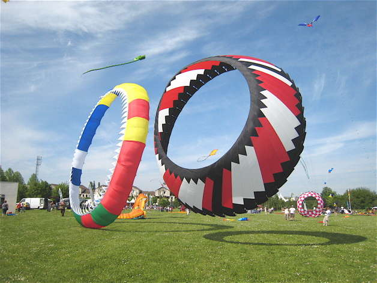
A y est, les deux sont gonflés ! Dommage, ils tournent dans le même sens et ça frotte, il ne se passera pas longtemps avant qu'ils ne s'aplatissent...

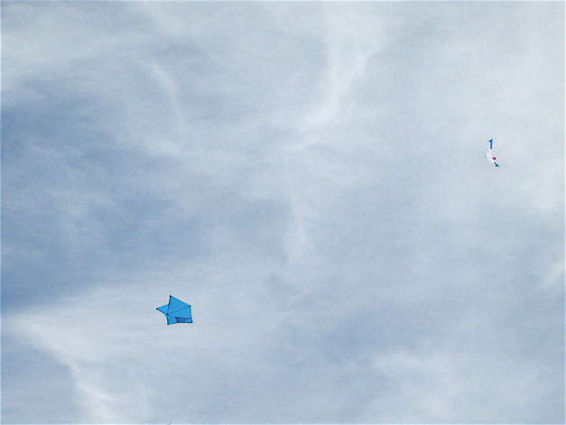
Vers la forêt, Gilles fait voler son Jessica de 4 m et fera même de la photo pour étrenner sa nacelle ! A côté, un Albatros de Vaux-Le-Pénil qui a un peu trop les ailes en flèche ou en dièdre ou les deux (à voir).

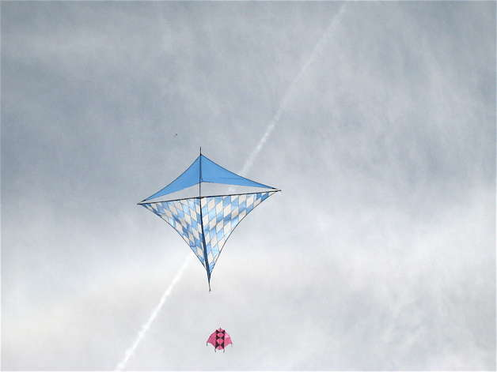
Un beau et grand Marconi, sans doute allemand, le damier à 45° faisant partie des armes de Munich...

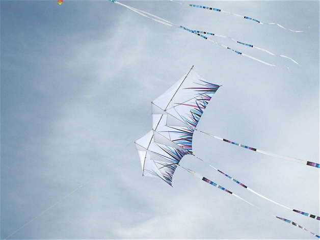
Hugo et Audrey ont commis deux magnifiques Fagas modifiés, en deux teintes harmonisées...

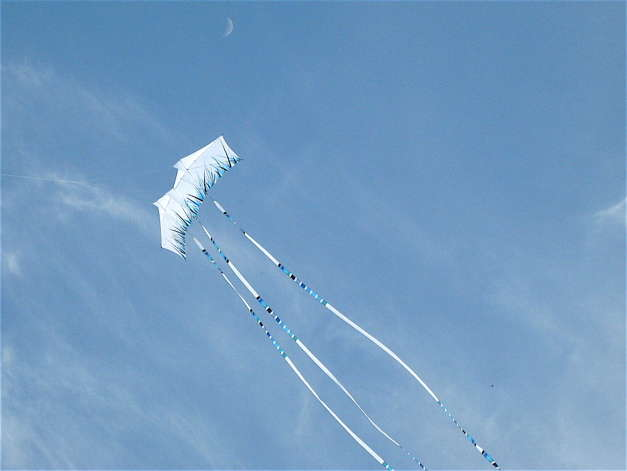
Voici le deuxième, qui traîne comme le premier des queues assorties...

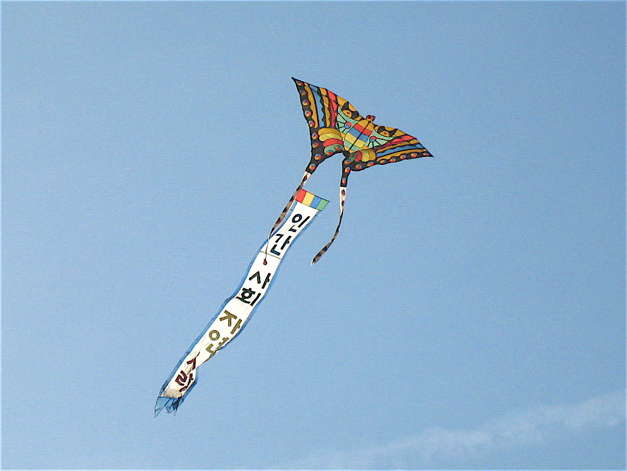
Un grand papillon de bien 4 m, doté d'une longue queue cabalistique qui pourrait bien être en coréen, des invités d'honneur de ce festival...

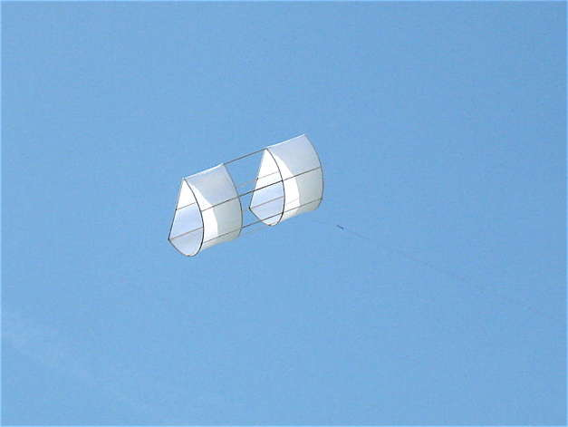
Et le Kusnetsov, superbe dans sa simplicité, qui a été l'objet d'un atelier en Allemagne récemment...

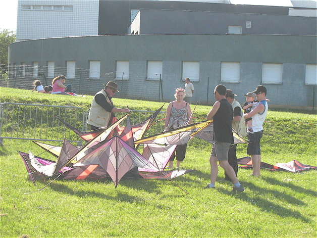
Le team Impossible est bien sûr présent, c'est leur fief ! Voilà ce qui arrive quand on n'attache pas bien les trains de deltas au sol...

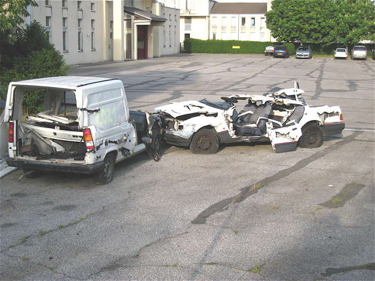
Au soir, départ à la Mairie pour un pot municipal. En passant, voilà ce qui arrive aux voitures mal garées, la Police est sans pitié !

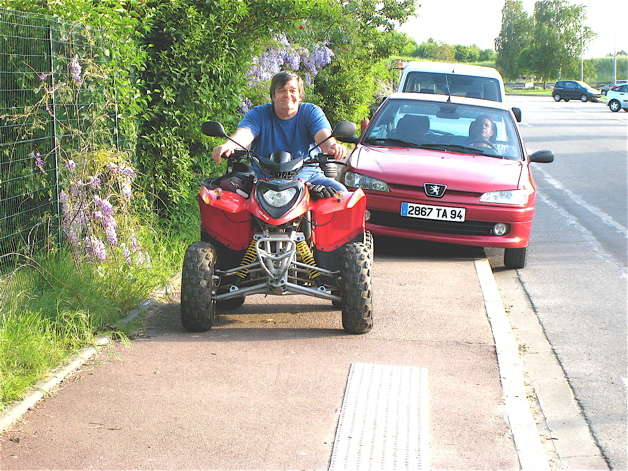
A moins que ce ne soit l'oeuvre de jeunes des banlieues aux cheveux longs et en Quad rouge qu'on a vu traîner dans le coin...

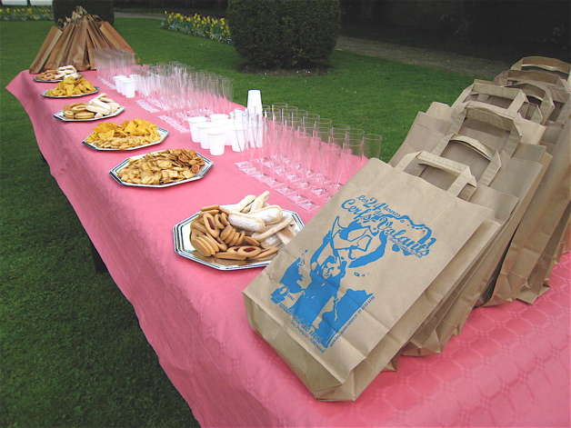
Le pot est généreux, et le cadre est sympathique et rafraîchissant, sur les pelouses derrière l'Hôtel de ville !

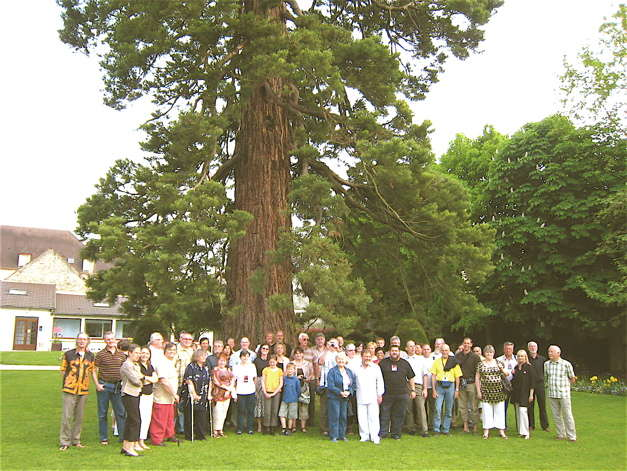
Tout le monde pose autour de l'adjointe au Maire, de Claude, Dominique, Bruno et Michel qui se sont bien donnés... et devant un magnifique séquoia malheureusement étêté sinon il ferait bien 60 m (heureusement, la photo ne montre pas le haut tristement coupé droit)...

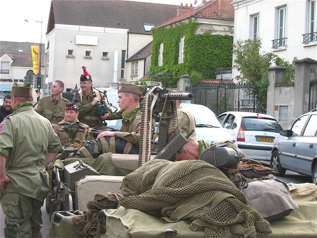
A la fin, des jeeps écossaises (du coin) qui passaient par là nous ont salué d'un peu de cornemuse...

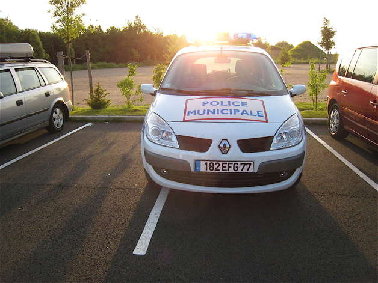
La Police nous suit ou nous précède partout, avec ces bandes, on ne sait jamais... Bien sûr, elle est au-dessus des règlements ou du civisme...

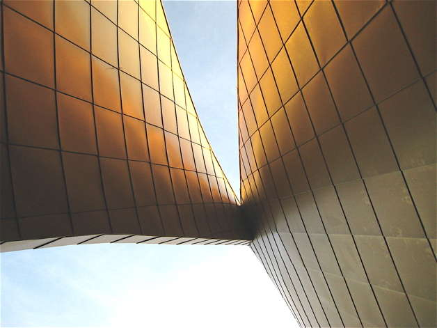
La salle est une construction toute neuve et ultra-moderne à l'architecture audacieuse dans le dessin et le revêtement de tuiles cuivrées !

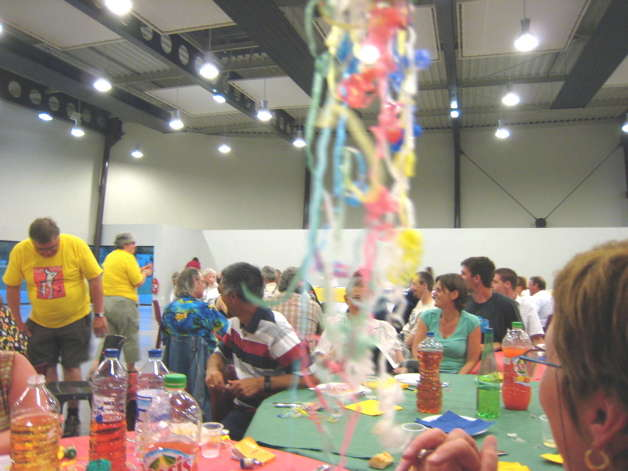
Grand buffet généreux, et Mark et Nihkoel lancent ensuite les hostilités en distribuant des lance-serpentins à pétard...

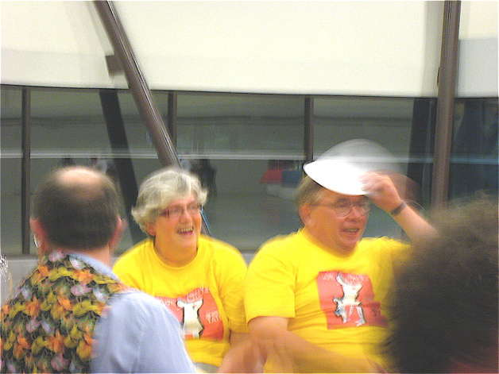
Les Anglais contre-attaquent avec de plus gros modèles, mais mécaniques et moins puissants...

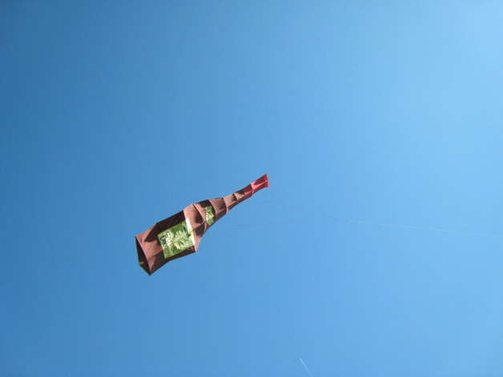
Le lendemain matin, rien ne vaut un petit coup de Côte de Brouilly amené par Gaby pour se remettre en train...

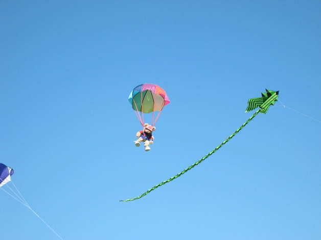
Les nounours qui font leur baptême répugnent un peu à se décrocher, mais ils sont bien obligés de finir par céder !

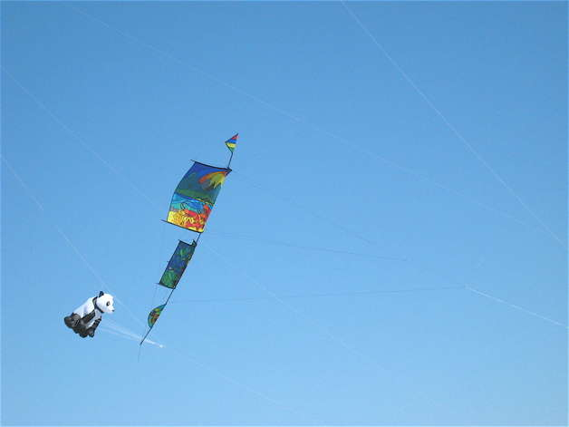
La grande carte postale a pris son vol devant un gros ours ou panda... Forme très creusée, qui gène un peu pour lire la déco...

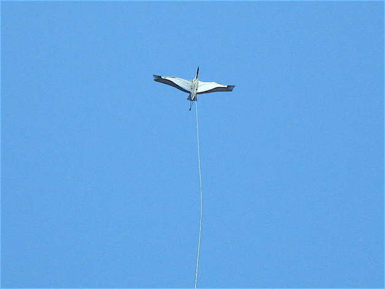
Après un petit vol vendredi, je monterai ma grue au top level, j'ai corrigé une dissymétrie nocive...

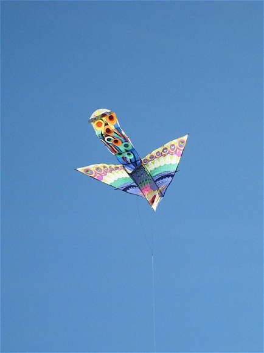
On revoit ce beau delta à plumage de paon multicolore...

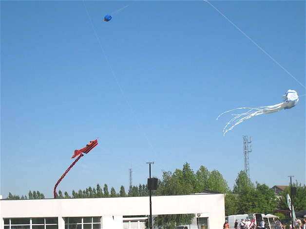
Il y a du monde, et un vent variable, on n'échappe pas à un atterrissage sur le toit du lycée ! Heureusement, les copains sont là pour relever la bête avec un grand delta qui la soulève comme une plume...

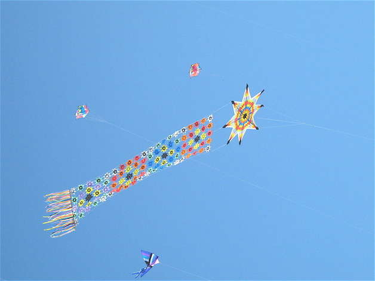
Il fait encore jour, mais cette magnifique constellation d'étoiles illumine le ciel de Brie !

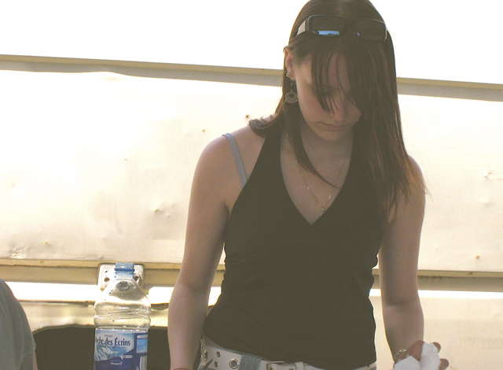
Déjeuner sous le barnum encore, poulet chaud et frites, gracieusement servis à la table !

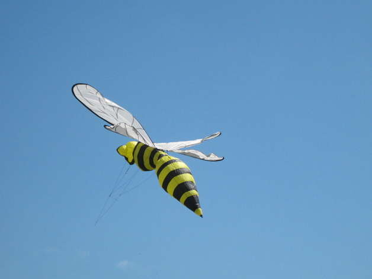
J'aime bien cette guêpe au corps bien rond avec ses anneaux alternés...

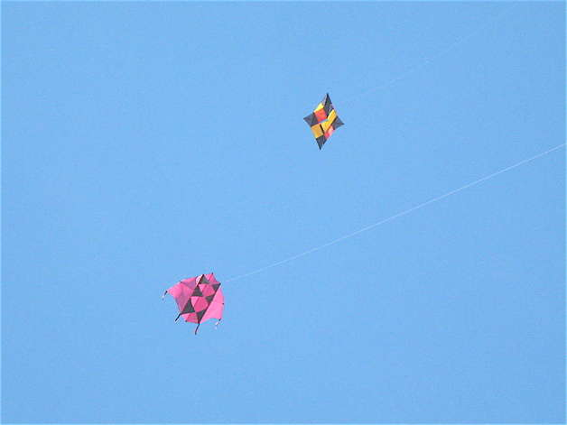
Deux CVs particuliers : si on comprend bien la forme du rouge, delta avec des caissons genre Pellibox, pour l'autre, il faut le voir de près mais il est finalement assez simple, proche aussi d'un Pellibox, mais ajouré...

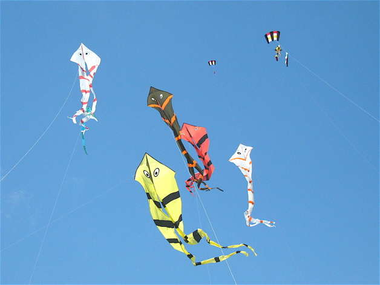
On retrouve aussi avec plaisir cette cohorte de deltas courbes ondulants et de toutes les couleurs qui font un bel ensemble...

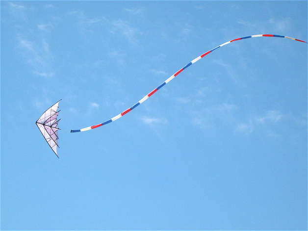
Gaby fait évoluer son super delta triplan deux-lignes, très remarqué mais qui ne sort pas souvent...

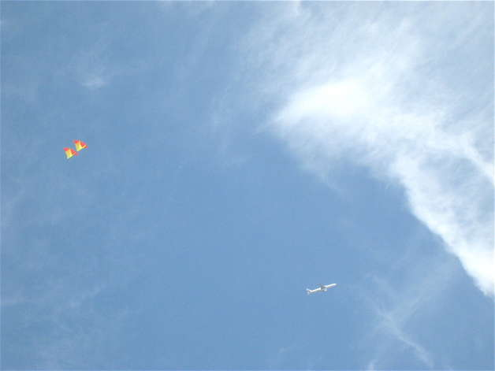
Deux engins très différents, à gauche un Brooks, bien adapté au vent fort, auquel on peut rajouter une grande toile triangulaire par vent faible... A droite, ce n'est pas un CV (si vous ne l'aviez pas remarqué), mais il passe vraiment bas !

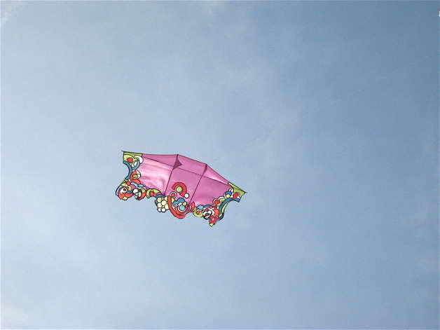
Sylvie fait voler ses dessous de soie froufroutants...

Ronan, lui, joue avec son Révo et les petits enfants qui passent et qui entrent bien dans le jeu...

Photo de classe pour les élèves de l'atelier BambouCoton, avec leur réalisation du week-end. Notez les 2 variantes, avec ou sans évent central. Dominique tient un véritable Conyne d'époque...

Puis, on fait voler les réalisations. Bon vol, quelques déventes en haut de fenêtre, à suivre...

Bruno Tondellier a monté un dispositif de télévision en direct. Au haut d'un solide (quand il ne se télescope pas tout seul) mât d'une dizaine de mètres, l'appareil est télécommandé en inclinaison et en zoom...

En bas, l'ensemble visualisation/commande, la descente image est filaire.

A côté des boutiques de Ludo et Dom et de Vire-Vole, un atelier pour enfants...

Sur le terrain, hommage à André Cassagnes avec les roues de Hugo, Thierry et Claude, et le triangle Impossible...

Ce beau Edo composite vole comme un vrai, stabilisé par ses immenses et nombreuses brides...

Le team Impossible (sans Julie, dommage) s'est produit tout le week-end, avec des ballets deux-lignes, des trains de deltas ou de Flexis comme ici. Il y a même eu un petit mégateam mais bref vu le manque d'entraînement à la chose des autres participants...

Evidemment, dans le ciel, c'est beau, mais au sol, c'est pas un jeu de fillettes, il faut faire le poids...

Un peu de rangement à l'atelier et retour à la maison. Un petit arrêt dînatoire pour laisser passer le flot des parisiens qui rentrent. Dans un chemin de campagne, avec des copains pas trop farouches qui sortent de partout !
Brie-Comte-Robert : Un super week-end, avec toutes les conditions réunies, c'est pas souvent le cas à Brie : un bon accueil, du soleil, du vent assez fort mais pas trop, et de la bonne direction ! On s'en souviendra de Brie 2008 !